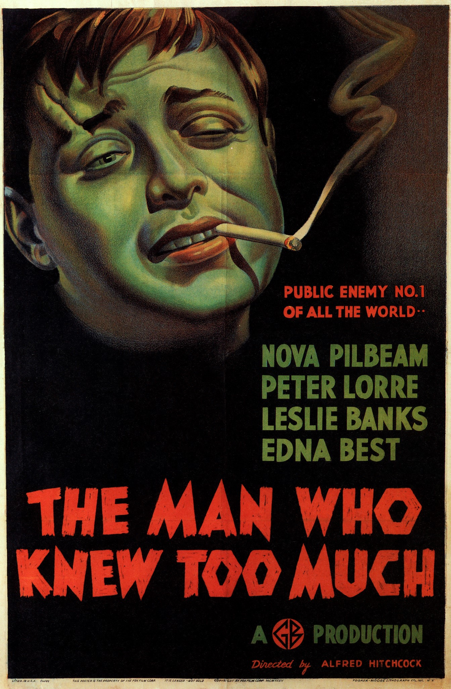
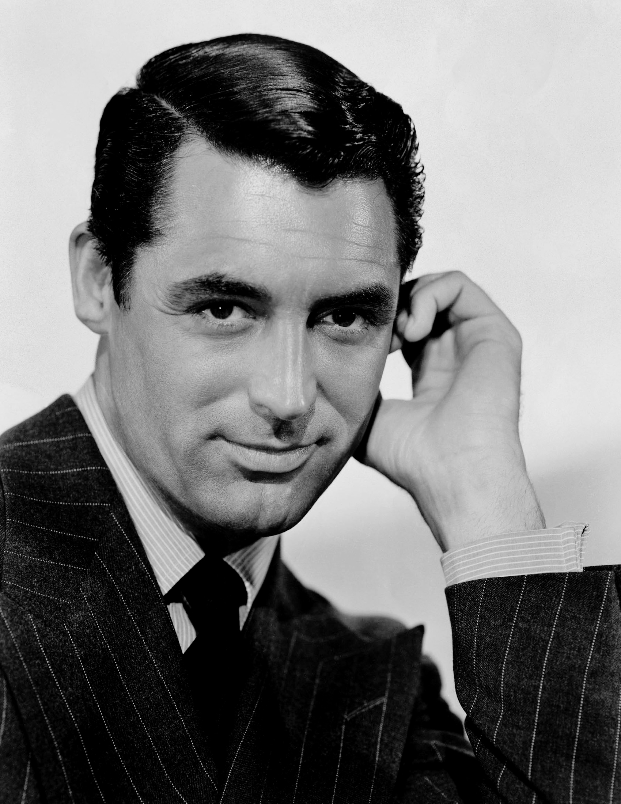

Here’s a little curio which appeared in the San Antonio Light newspaper on 26th April 1945, nearly 20 years before Hitchcock made The Birds (1963). In an article titled “Peace Plans Pour Into Conference”, the newspaper apparently asked Hitchcock what might happen if there was another world war…
Hitchcock believes that birds will inherit the earth, if there is another war. He told us recently: “Crows, probably. You can see that they’re working that way already. They hold courts, have a fair language and a rudimentary banking system. I like their chances of taking over.”
-
The Man Who Knew Too Much(1934)

The film is Hitchcock's first film using this title and was followed later with his own 1956 film using the same name featuring a significantly different plot and script. The second film featured James Stewart and Doris Day and was made for Paramount Pictures. The two films are very different in tone. In the book-length interview Hitchcock/Truffaut (1967), in response to filmmaker François Truffaut's assertion that aspects of the remake were by far superior, Hitchcock replied, "Let's say the first version is the work of a talented amateur and the second was made by a professional
-
Rebecca(1940)
The film is a gothic tale shot in black-and-white. Maxim de Winter's first wife Rebecca, who died before the events of the film, is never seen. Her reputation and recollections of her, however, are a constant presence in the lives of Maxim, his new wife and the housekeeper Mrs. Danvers.
Rebecca won two Academy Awards, Best Picture and Cinematography, out of a total 11 nominations. Olivier, Fontaine and Anderson also were Oscar-nominated for their respective roles as were Hitchcock and the screenwriters.
-
Notorious(1946)
Notorious is considered by critics and scholars to mark a watershed for Hitchcock artistically, and to represent a heightened thematic maturity. His biographer, Donald Spoto, writes that "Notorious is in fact Alfred Hitchcock's first attempt—at the age of forty-six—to bring his talents to the creation of a serious love story, and its story of two men in love with Ingrid Bergman could only have been made at this stage of his life."
-
The Stranger on the Train(1951)
The story concerns two strangers who meet on a train, a young tennis player and a charming psychopath. The psychopath suggests that because they each want to "get rid" of someone, they should "exchange" murders, and that way neither will be caught. The psychopath commits the first murder, then tries to force the tennis player to complete the bargain.
-
Dial M for Murder(1954)
Dial M for Murder is a 1954 American crime mystery film directed by Alfred Hitchcock, starring Ray Milland, Grace Kelly, Robert Cummings and John Williams. Both the screenplay and the successful stage play on which it was based were written by English playwright Frederick Knott. The play premiered in 1952 on BBC Television, before being performed on stage in the same year in London's West End in June, and then New York's Broadway in October. Originally intended to be shown in dual-strip polarized 3-D, the film played in most theatres in ordinary 2-D due to the loss of interest in the 3-D process (the projection of which was difficult and error-prone) by the time of its release. The film earned an estimated $2.7 million at the North American box office in 1954.
-
Gary Grant

Cary Grant (born Archibald Alec Leach; January 18, 1904 – November 29, 1986) was an English-born American actor, known as one of classic Hollywood's definitive leading men. He began a career in Hollywood in the early 1930s, and became known for his transatlantic accent, debonair demeanor, light-hearted approach to acting, and sense of comic timing. He became an American citizen in 1942.
-
James Stewart
James Maitland Stewart (May 20, 1908 – July 2, 1997) was an American actor and military officer who is among the most honored and popular stars in film history. With a career spanning 62 years, Stewart was a major Metro-Goldwyn-Mayer contract player who was known for his distinctive drawl and down-to-earth persona, which helped him often portray American middle-class men struggling in crisis. Many of the films in which he starred have become enduring classics.
-
Ingrid Bergman
Ingrid Bergman (29 August 1915 – 29 August 1982) was a Swedish actress who starred in a variety of European and American films.She won three Academy Awards, two Primetime Emmy Awards, four Golden Globe Awards, a BAFTA Award, and a Tony Award. She is best remembered for her roles as Ilsa Lund in Casablanca (1942) and Alicia Huberman in Notorious (1946).
-
Grace Kelly
Grace Patricia Kelly (November 12, 1929 – September 14, 1982) was an American film actress who became Princess of Monaco after marrying Prince Rainier III in April 1956.
After embarking on an acting career in 1950, when she was 20, Kelly appeared in New York City theatrical productions and more than 40 episodes of live drama productions broadcast during the early 1950s Golden Age of Television. In October 1953, she gained stardom from her performance in director John Ford's film Mogambo starring Clark Gable and Ava Gardner, which won her a Golden Globe Award and an Academy Award nomination in 1954. Subsequently, she had leading roles in five films, including The Country Girl (1954) with Bing Crosby, for which her deglamorized performance earned her an Academy Award for Best Actress. Other films include High Noon (1952), with Gary Cooper; High Society (1956), with Bing Crosby and Frank Sinatra; and three Alfred Hitchcock films: Dial M for Murder (1954), with Ray Milland; Rear Window (1954), with James Stewart; and, To Catch a Thief (1955), with Cary Grant.
-
Tippi Hedren
Nathalie Kay "Tippi" Hedren (born January 19, 1930) is an American actress, animal rights activist and former fashion model.
A successful fashion model from her twenties, appearing on the front covers of Life and Glamour magazines among others, Hedren became an actress after she was discovered by director Alfred Hitchcock while appearing on a television commercial in 1961. She received world recognition for her work in two of his films, the suspense-thriller The Birds in 1963, for which she won a Golden Globe, and the psychological drama Marnie in 1964.